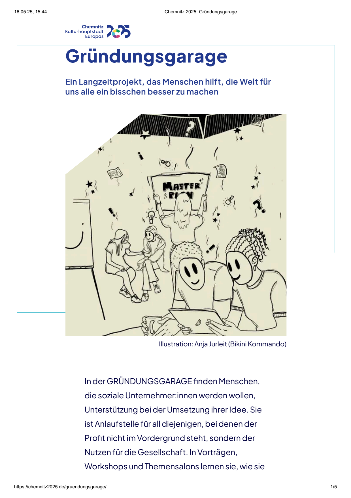

http://www.posthoernleinklackern.de | Das E >> Magazin nach dem Motto: »fake news as fake news.« | Werbung und Bewerbungen und Vorarbeiten der Firma: Chercheling - Beratung zu Nebenprodukten in Produktionsverwandtschaften | Joachim Schneider | Leipartstraße 12 | 81369 München | posthoernlein@e.mail.de
2025: Chemnitzer Automechaniker-Unternehmen »Chauffeur Garage« repariert nur noch Wägen aus eigenem und neuem *Car-Sharing* und nur noch im *Garage-Sharing* ! Chemnitzer Automechaniker schenkt jedem altgedienten Mechaniker einen neuen eigenen Methangas-Motor-Generator-Van von BMW mit schnell ausbaubaren Sitzen und lässt die Wägen mittels der *Carsharing-Software* »Chauffeur« von Werbezeitung Posthörnchen verpachten ! Arbeitsverträge von Mitarbeitern werden umgestellt auf Werkstatt-Pacht mit Gewinn-Beteiligung (und Begrenzung) an der Werkstatt-Kasse und auf den Gewinn aus der eigenen Kasse von jedem Gliedpacht-Wagen, der nach jeder Mitglied-Fahrt zu prüfen und außerdem vollgetankt zu halten ist. Man bietet neue Mitarbeiterstellen etwa auch Taxi-Fahrern und Möbelpackern an, die ebenfalls für Taxi- oder Kurier- oder Fracht-Fahrten einheitlich den doppelten Buchungspreis der Eigennutzung aus der Gliedpacht verlangen sollen ! Chemnitzer IT-Firma will dafür Computerbetriebschaltung »Chauffeur« der Werbezeitung Posthörnchen bauen und beteiligt die Chercheling Unternehmensberatung an Planung und Gewinn !Nuszgrube 267.39.2025 (24. September) | 275.40.2025 (2. Oktober) | 321.47.2025 (17. November) Nuszkullersprungfake news as fake news.Die Bessere Hälfte der Welt.
2025: Chemnitzer Automechaniker-Unternehmen »Chauffeur Garage« repariert nur noch Wägen aus *Car-Sharing*, die er dafür auch selber pachtet ! Chemnitzer Automechaniker kauft für alle Mitarbeiter die neuen Methangas-Motor-Generator-Vans von BMW mit schnell ausbaubaren Sitzen und pachtet die von Mitarbeitern, um sie mit Carsharing-Software »Chauffeur« von Werbezeitung Posthörnchen auszustatten ! Arbeitsverträge von Mitarbeitern werden umgestellt auf Werkstatt-Pacht abzüglich Wagen-Pacht gegen Gewinn-Kassen-Beteiligung, was man auch aber nicht nur Taxi-Fahrern und Möbelpackern anbietet, die ebenfalls für Taxi- oder Kurier-Fahrten einheitlich den doppelten Buchungspreis der Eigennutzung verlangen sollen ! Chemnitzer IT-Firma will dafür Software »Chauffeur« bauen und beteiligt Posthörnchen an Planung und Gewinn !Nuszgrube 267.39.2025 (24. September) | 275.40.2025 (2. Oktober) | 321.47.2025 (17. November) Nuszkullersprungfake news as fake news.Die Bessere Hälfte der Welt.

Fassung vom 257.38.2026 (14. September)